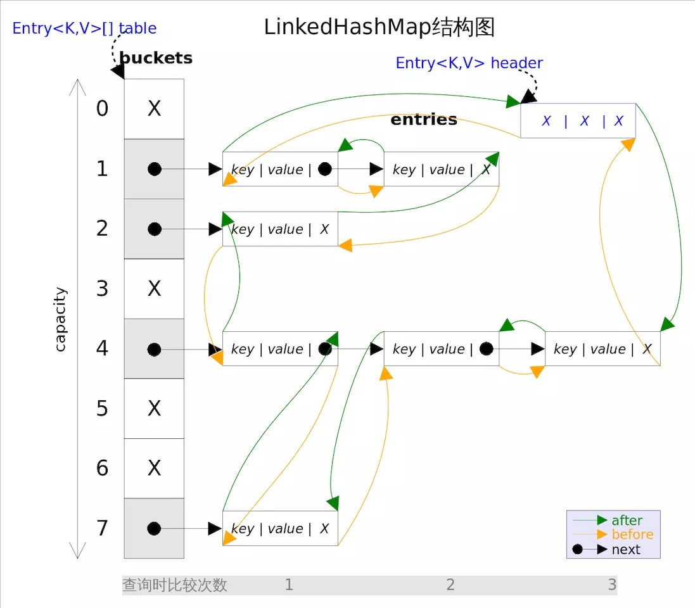

概述 LinkedHashMap 是HashMap 的一个子类，保存了键值对的插入顺序 ，在用Iterator 遍历LinkedHashMap 时，先得到的键值对肯定是先插入的，也可以在构造时带参数，按照访问次序排序。
LinkedHashMap 的实现底层数据结构 
1 2 3 4 5 6 static class Entry <K ,V > extends HashMap .Node <K ,V > Entry<K,V> before, after; Entry(int hash, K key, V value, Node<K,V> next) { super (hash, key, value, next); } }
节点Entry继承自HashMap.Node，包含前置指针和后置指针。
1 2 3 4 5 6 transient LinkedHashMap.Entry<K,V> head;transient LinkedHashMap.Entry<K,V> tail;final boolean accessOrder;
由此可见LinkedHashMap 相对于HashMap 增加了双向链表的结构，并且增设了一个变量用于维护插入顺序或者访问顺序。
构造方法 1 2 3 4 5 6 7 8 9 10 11 12 13 14 15 16 17 18 19 public LinkedHashMap (int initialCapacity, float loadFactor) super (initialCapacity, loadFactor); accessOrder = false ; } public LinkedHashMap (int initialCapacity) super (initialCapacity); accessOrder = false ; } public LinkedHashMap () super (); accessOrder = false ; } public LinkedHashMap (int initialCapacity,float loadFactor, boolean accessOrder) super (initialCapacity, loadFactor); this .accessOrder = accessOrder; }
由构造方法知LinkedHashMap 默认维护的是插入顺序。
常用方法分析 get() 1 2 3 4 5 6 7 8 public V get (Object key) Node<K,V> e; if ((e = getNode(hash(key), key)) == null ) return null ; if (accessOrder) afterNodeAccess(e); return e.value; }
1 2 3 4 5 6 7 8 9 10 11 12 13 14 15 16 17 18 19 20 21 22 23 24 void afterNodeAccess (Node<K,V> e) LinkedHashMap.Entry<K,V> last; if (accessOrder && (last = tail) != e) { LinkedHashMap.Entry<K,V> p = (LinkedHashMap.Entry<K,V>)e, b = p.before, a = p.after; p.after = null ; if (b == null ) head = a; else b.after = a; if (a != null ) a.before = b; else last = b; if (last == null ) head = p; else { p.before = last; last.after = p; } tail = p; ++modCount; } }
由get方法可知，accessOrder为true，也即LinkedHashMap 维护的是LRU(最近最少访问)顺序时，每次调用get方法都会将当前节点移动至链表尾部。保证链表尾部是最近访问的节点，那么链表首部就是最近最久未使用的节点。
put() 查看源码发现LinkedHashMap 并没有重写put方法，但是重写了newNode方法，因此put会调用重写的newNode方法。并且发现put方法最后调用了afterNodeAccess方法。
1 2 3 4 5 6 7 8 9 10 11 12 13 14 15 16 17 18 Node<K,V> newNode (int hash, K key, V value, Node<K,V> e) { LinkedHashMap.Entry<K,V> p = new LinkedHashMap.Entry<K,V>(hash, key, value, e); linkNodeLast(p); return p; } private void linkNodeLast (LinkedHashMap.Entry<K,V> p) LinkedHashMap.Entry<K,V> last = tail; tail = p; if (last == null ) head = p; else { p.before = last; last.after = p; } }
removeEldestEntry() 重写该方法可以删除最久未被使用的元素。
afterNodeInsertion() 新增时判断是否需要删除最久未被使用的元素。
开启accessOrder的情况和最后这两个方法主要用于实现LRU缓存。
小结
LinkedHashMap 相对于HashMap 增加了双向链表的结构，并且增设了变量accessOrder用于维护插入顺序或者访问顺序。accessOrder为true，即LinkedHashMap 维护的是LRU(最近最少访问)顺序时，每次调用get/put都会将当前节点移动至链表尾部。注意这意味着get也会导致modCount变化，迭代器会快速失败。